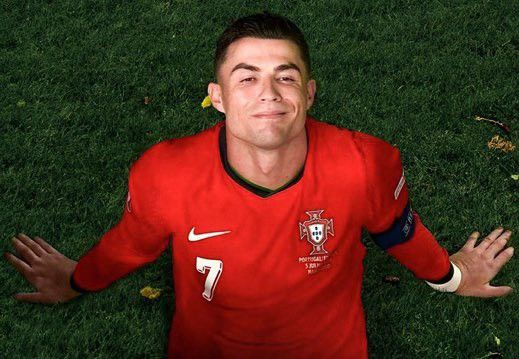

Era Cristiano Ronaldo bersama tim nasional Portugal akan segera mencapai penghujungnya. Sang megabintang mengumumkan pada Kamis bahwa dirinya berniat pensiun dari sepak bola internasional setelah jeda pertandingan internasional November.

Dalam pengumumannya, pemain berusia 41 tahun tersebut menyampaikan bahwa ia akan menyerahkan kembali seragam bernomor punggung tujuh setelah agenda internasional bulan ini selesai. Kabar tersebut menandai akhir dari perjalanan panjang seorang pemain yang telah menjadi ikon bagi negaranya selama lebih dari dua dekade.
Ronaldo mencatatkan 234 penampilan dan 146 gol bersama Portugal. Kedua catatan tersebut menjadikannya pemegang rekor sepanjang masa tim nasional Portugal, baik dalam jumlah penampilan maupun gol internasional.
Sejak menjalani debut internasionalnya, Ronaldo telah melewati berbagai generasi pemain dan menjadi bagian penting dari perjalanan Portugal di panggung sepak bola dunia. Ia juga menjadi kapten yang identik dengan identitas tim nasional dalam era modern.
Keputusan ini akan menutup satu babak besar dalam karier internasionalnya. Meski demikian, warisan Ronaldo bagi Portugal akan tetap dikenang melalui rekor, dedikasi, dan kontribusinya selama membela Selecção das Quinas.